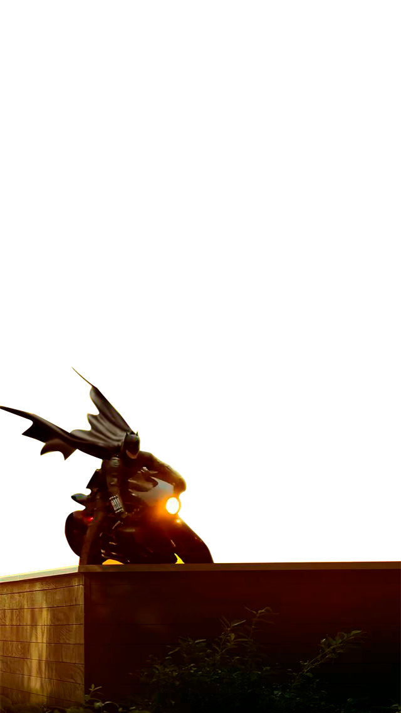
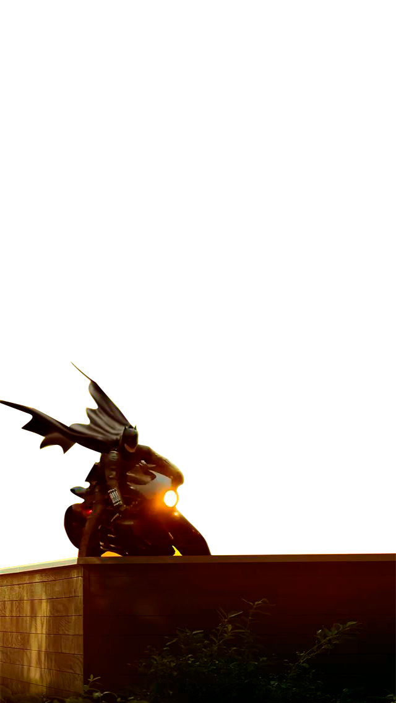

Vuelve..
Se estrenara en
- Dias
- Horas
- Minutos
- Segundos
JEFFREY WRIGHT – JAMES GORDON
Jeffrey Wright es una de las elecciones más controversiales por ser un actor que cumple la ‘cuota de color’ en la película de The Batman, sin embargo, en sus primeros segundos como James Gordón demuestra cabalmente que tiene todo el porte para dar vida al Jefe de Policía de Ciudad Gótica.
ZOË KRAVITZ – SELINA KYLE/CATWOMAN
Con cierta experiencia trabajando en papeles relacionados con superhéroes en las películas de X-Men y poner su voz para Mary Jane Watson en Spider-Verse, Zoë Kravitz ahora probará suerte en las películas de DC y Warner Bros. Pictures mostrando su interpretación como Selina Kyle en sus primeros años como ladrona antes de ser Catwoman.
COLIN FARRELL – OSWALD COBBLEPOT/THE PENGUIN
Después de ser nominado a actor del año en 2017 por The Killing of Sacreed Deer y The Beguiled, Colin Farrell demostrará qué tan camaleónico puede ser cuando de vida a Oswald Cobblepot antes de que se vuelva formalmente como The Penguin. Este fue uno de los fichajes más sonados cuando The Batman comenzó a armar a su elenco.
PAUL DANO – THE RIDDLER/EDWARD NASHTON / EL ANTAGONISTA EN THE BATMAN
Con experiencia en cine y televisión, Paul Dano fue elegido por el director Matt Reeves para interpretar al The Riddler en la película de The Batman. Este actor tendrá la dura idea de darle vida a uno de los villanos más icónicos creados por Bill Finger y Dick Sprang
ROBERT PATTINSON: BATMAN/BRUCE WAYNE
El actor de origen inglés que se dio a conocer por su actuación en Harry Potter y el Cáliz de Fuego y Crepúsculo fue elegido por Matt Reeves para interpretar a Batman y Bruce Wayne.
ANDY SERKINS – ALFRED PENNYWORTH
Además de ser conocido por el papel de Gollum en El Señor de los Anillos, Andy Serkis cuenta con un amplio currículo en su carrera. Lo interesante de su elección para ser Alfred, el mayordomo de la familia Wayne, es que lleva varios años trabajando bajo la supervisión de Matt Reeves.
El estreno en EEUU sera en el central park. Disponible en auto cine... solo asiste un Gordon que se durmio en la cama solar... y el hijo del Pinguino
Gordon
Y el mini Pinguino
El estreno en EEUU sera en el central park. asistiran alguno de los protagonistas principales
Cat,Alfred?..Batman
Juntos en la Comicoon
Pospusieron fechas de estreno por diversas causas
Batman(actor en duda)
Shazam covid positivo
Presentacion del Batimovil en consecionario Chevrolet
TAUN
Ofrece Batimovil ahora 12